StackMon
StackMon
Observation of OpenStack based clouds
- Artem Goncharov
- Nils Magnus
Agenda
- Why not ...XYZ
- What
- How
Why (and why not ...XYZ)
What we wanted is:
- Monitor cloud from end user perspective
- different metric physics (latencies, rates, occurences)
- Events vs metrics (logs)
- easy extensibility and readability and clarity
- status page with SLA calculation (convert raw metrics into service status)
- not invent another another monitoring system
What (are we doing)

How (are we doing that)
- Ansible playbook as a testing scenario
- API metrics emited by OpenStackSDK under the hood
- Additional metrics gathering plugins (i.e. static resources)
- Metrics processed through StatsD and stored in Graphite
- Metric Processor converts raw data into flags and semaphores with complex logic
- Status dashboard visualizes service semaphores
- Grafana visualizes service behavior, trends, etc
High Level Design

Testing options
- ApiMon - Ansible driven playbook scheduler/executor
- EpMon - Endpoint monitoring
- Arbitrary testing container doing something and producing metrics
ApiMon
- hosts: localhost
tasks:
- block:
- name: List Images
openstack.cloud.image_info:
- name: Get single Image
openstack.cloud.image_info:
image: "Standard_Fedora_38_latest"
- name: Download cirros image
ansible.builtin.get_url:
url: https://download.cirros-cloud.net/0.6.0/cirros-0.6.0-x86_64-disk.img
dest: /tmp/ansible/images/cirros.img
- name: Upload cirros image
openstack.cloud.image:
name: "{{ image_name }}"
filename: /tmp/ansible/images/cirros.img
always:
- name: Delete cirros image
openstack.cloud.image:
name: "{{ image_name }}"
state: absentEpMon
Dummy GET requests to the URL of the endpoint
Under the hood (OpenStackSDK)
OpenStackSDK used by Ansible (ApiMon) and EpMon emits StatsD metrics out of the box.
For complex cases custom metrics are captured by Ansible callback plugin.
Generic StackMon plugin (LB)

Data Flow

Metric Processor
When is a service degraded or is experiencing outage?
- latency of GET requests is above x sec?
- POST to provision new resource fails?
- API not reachable?
- provisioned resource can not be reached anymore?
- error rate too high?
- what if things work from one zone, but not from another?
Flags and Semaphores
Status definition possibility (semaphores):
- outage is when (X and Y) or Z
- major incident is when A and B
- minor incident is when A or B
where (flags):
- A => bool(avg(latency) > 1s)
- B => bool(avg(success_rate) < 50%)
- X => bool(percentage(error.5XX) == 100%)
- ...
Status Dashboard

Status Dashboard (Theming)